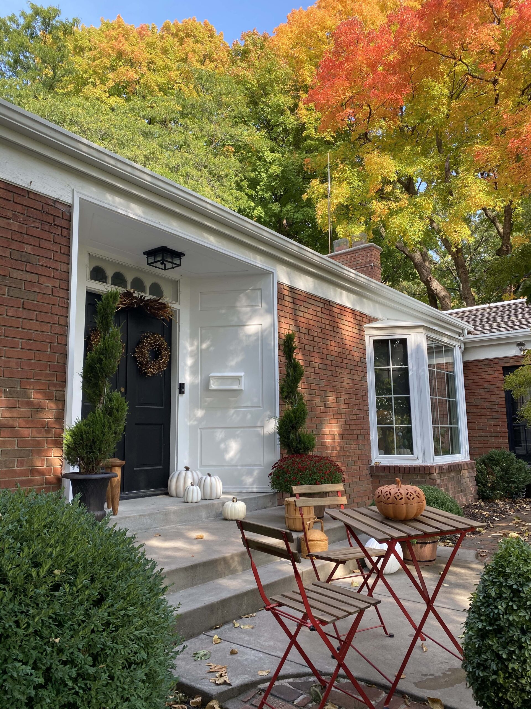

8 Essential Tasks for Maintaining a Healthy Garden All Year Long

When it comes to gardening like a pro, regular maintenance is key. It’s the secret to setting yourself up for success and achieving a thriving, healthy garden. By staying on top of simple tasks over the course of the growing season, you can create an environment that nurtures healthy plants and beautiful blooms.
To help you get started, our friend Jessie Jacobson, owner of Tonkadale, is back and sharing eight essential tasks to incorporate into your gardening routine throughout the year. These tasks will ensure that your garden remains vibrant and flourishing, no matter the season. So grab your gardening gloves and let’s dive into the details of each task, from pruning to planting to prepping for winter. Happy gardening!
8 Steps for Healthy Garden
- 1. Yard and garden
- In the spring, start yard and garden cleanup after the daytime temperatures are consistently 50 degrees and above. This allows our overwintering pollinator friends time to wake up without disturbance.
- 2. mulch
- Wait to add fresh mulch to gardens until the soil has warmed and is workable.
- 3. deadhead
- Throughout the growing season, continuously clip back spent blooms. Do consider leaving some seed pods to provide fall and winter interest and food for songbirds.
- 4. prune
- Pruning is generally done after bloom time. This is especially true for flowering shrubs. Prune shrubs that bloom on new wood (buds are formed on new growth during the current growing season) in late winter or early spring. In the Twin Cities area, this is late March or early April. You may also prune this type of shrub in the fall, but most gardeners like to leave dried blooms for winter interest. Examples include panicle hydrangeas, spirea, roses, smoke bush, and cotoneaster.
Prune shrubs that bloom on old wood (buds are formed the previous year and are ready to pop during the following growing season) in late spring, summer, or fall. In general, prune these shrubs after they bloom and their flowers fade. Think spring bloomers. Examples include forsythia, magnolia, lilacs, weigela, ninebark, and viburnum. - 5. divide
- It’s best to divide plants after their bloom time or in the fall, making sure to avoid the hottest days of summer. Perennials need to be divided when they become too big for the space, have open or dead centers, are flopping over, display reduced vigor or blooms, or have multiple crowns.
- 6. plant
- Plant perennials, trees, and shrubs any time after the soil warms, avoiding the hottest days of the summer. Fall is a great time for planting if extra winter protection is provided. Dig a hole twice the diameter of the plant, amend the soil with compost or planting mix, and water well during the first year of establishment.
- 7. winter prep
- Make sure to cut back any dead or diseased plant tissue in the fall. Many gardeners like to leave as many plants as possible (or as much as they can tolerate) standing to provide winter habitat for overwintering pollinators, food for songbirds, winter interest, and a place for snow to gather which provides extra winter protection. Whatever you leave up in the fall will need to be cut back or cleaned up in the spring.
In general, leave up hydrangeas, echinacea, ornamental grasses, heuchera, and sedum. Some plants just don’t make it to the end of the season looking their best. Don’t be afraid to remove foliage throughout the season. Bleeding hearts and peonies start to look ragged late in the summer while salvia and catmint will provide a flush of new blooms. Major cutbacks should be done after the first hard frost. - 8. cover
- Cover tender or newly planted perennials in the fall after the ground has frozen solid to provide extra insulation, which alleviates damage and dieback from freeze-thaw cycles. Pile in 6” of marsh hay or leaves from the yard. Wrap evergreens that are prone to winter burn, like boxwood and arborvitae, with a couple of layers of burlap.
Whether you’re a seasoned gardener or a novice, the process of growing and nurturing plants is a rewarding endeavor. A healthy garden takes time, practice, and a little bit of luck. Remember, every garden is a living, breathing ecosystem that requires care, attention, and a good deal of love. If you’re uncertain about any aspect of your gardening journey or need specific advice or materials, don’t hesitate to drop by Tonkadale. Their team of experts is always ready to share knowledge, provide guidance, and offer the best products to meet all your gardening needs.